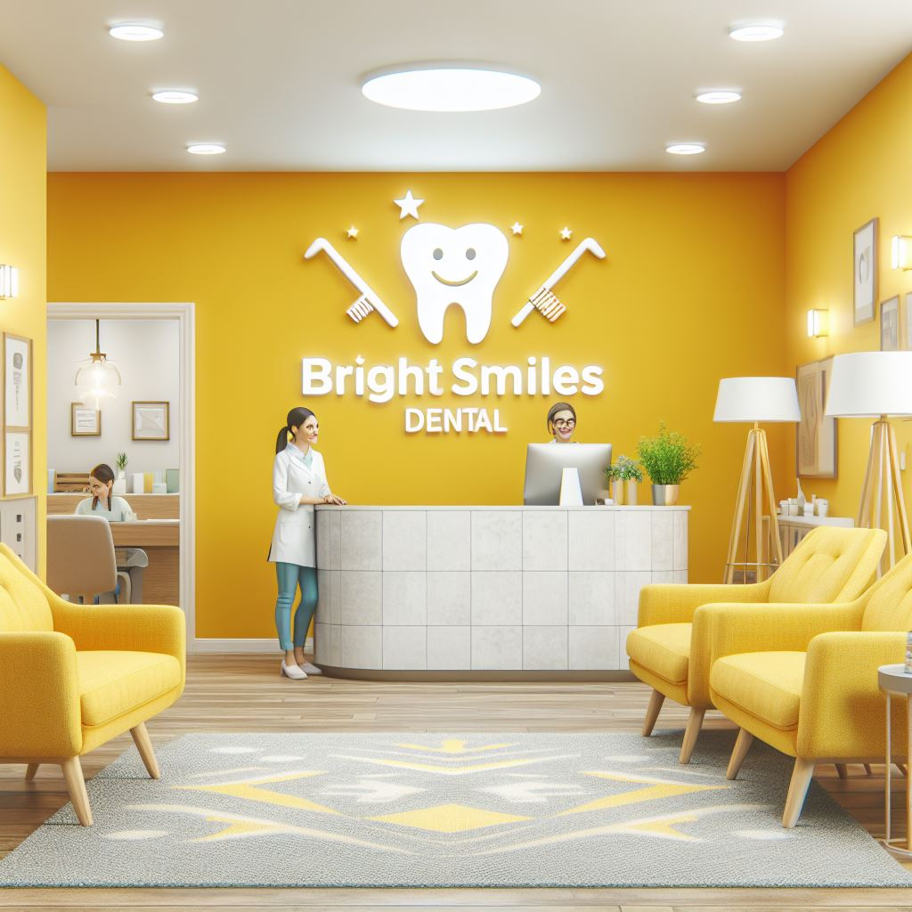

Consultorio Dental Sonrisas Brillantes

Mision
Brindar servicios de odontología de alta calidad con un enfoque en la prevención, la atención personalizada y la satisfacción del paciente.
Vision
Ser el consultorio dental líder en Managua, reconocido por su excelencia profesional, su tecnología de vanguardia y su compromiso con la salud bucal de la comunidad.
Valores
- Profesionalismo: Ofrecemos servicios de odontología de alta calidad con los más altos estándares de ética y profesionalismo.
- Atención personalizada: Nos preocupamos por las necesidades individuales de cada paciente y brindamos un trato amable y cordial.
- Satisfacción del paciente: Nos esforzamos por superar las expectativas de nuestros pacientes y brindarles una experiencia dental positiva.
- Prevención: Creemos en la importancia de la prevención y educamos a nuestros pacientes sobre cómo mantener una buena salud bucal.
- Tecnología de vanguardia: Invertimos en tecnología de última generación para brindar a nuestros pacientes los mejores tratamientos disponibles.
- Compromiso con la comunidad: Estamos comprometidos con la salud bucal de la comunidad y participamos en programas de educación y prevención.